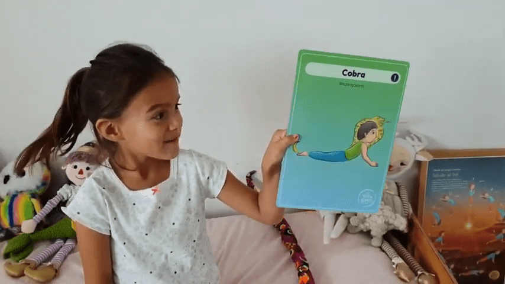

Hola! Aquí les comparto un nuevo video de Luz quien hoy quiere mostrarles la postura de la Cobra🐍 (Bhujangasana)
☆
Esperamos que la disfruten! 💛💜
☆
La práctica de esta postura de manera regular te puede aportar muchos beneficios: * Estiras la espalda y la haces más flexible y elástica.
- Eliminas la tensión que pueda haber en los músculos, lo que sirve para relajarte.
- Fortaleces la espalda. * Fortaleces los brazos.
- Fortaleces los abdominales.
- Fortaleces las piernas.
- Mejora la postura.
- Evitarás los hombros caídos.
- Mejora la capacidad pulmonar. 👉 Si te ha gustado este video, dale Like y te invitamos a compartirlo para que más niños y niñas puedan practicar yoga en sus casas.
Un abrazo,
Luz y Carmen 💫
